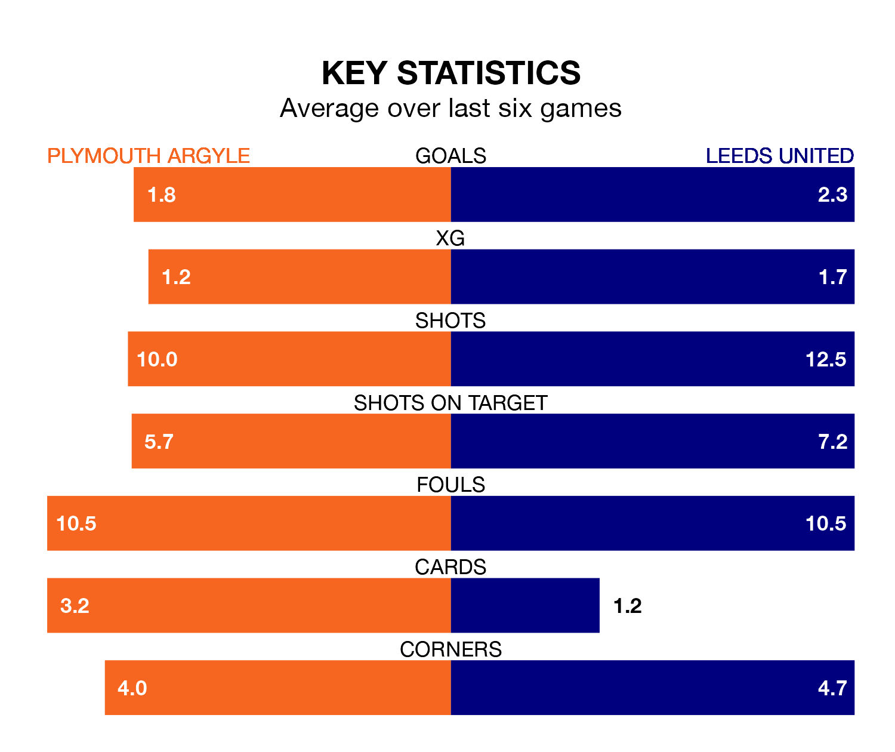

Leeds United are strong favourites to take all three points despite Plymouth Argyle's home advantage in Saturday lunchtime's match at Home Park.
*Betting Company* are offering odds of 1.43 on Leeds sealing the win, with the visitors sitting second in EFL Championship table.
Plymouth, who are 15th in the league and 29 points behind Leeds, are priced at 5.7 to win. A draw is set at 4.8.
Plymouth are in mixed form in EFL Championship, with two wins and three draws from their last six games.
With six wins and no losses over that period, Leeds's form is much better – they have taken 18 points from 18, compared to Argyle's nine.
With 59 goals in 32 games so far this season, United are the league's joint-third-highest scorers with 1.8 goals per game. And they are conceding fewer than average, letting in 26 goals at a rate of 0.8 per game.
The Pilgrims are also above average scorers, with 1.6 goals per game, compared to a league average of 1.4. They have conceded 1.7 goals per game.
In Morgan Whittaker, the hosts have the league's sharpest shooter so far this season. He has notched 17 goals in 31 appearances.
His goal rate of one every 156 minutes is slightly quicker than that of Crysencio Summerville, the away side's top scorer with a goal every 155 minutes, and a total of 15 goals in 29 games.
In the last three years, Plymouth and Leeds have played each other on three occasions. Leeds won two of them and they drew once.
Their last meeting was on February 6, when Leeds won 4-1 away.
Plymouth's last match was on Wednesday, a 2-2 draw against Coventry City, with Mikel Miller and Whittaker getting the goals for the Pilgrims.
Leeds beat Swansea City 4-0 last time out, on Tuesday, with Wilfried Gnonto (two), Joël Piroe and Summerville on the scoresheet.
Saturday's match will be refereed by Matt Donohue, who has taken charge of 19 EFL Championship games so far this season, issuing one red card and booking 82 players. He has awarded three penalties.
The last Plymouth game Donohue refereed was a 4-1 away loss to Bristol City on September 19. His last Leeds match was their 1-0 win at home against Norwich City on January 24.
Updated: 13:04 (UTC), 16/02/24